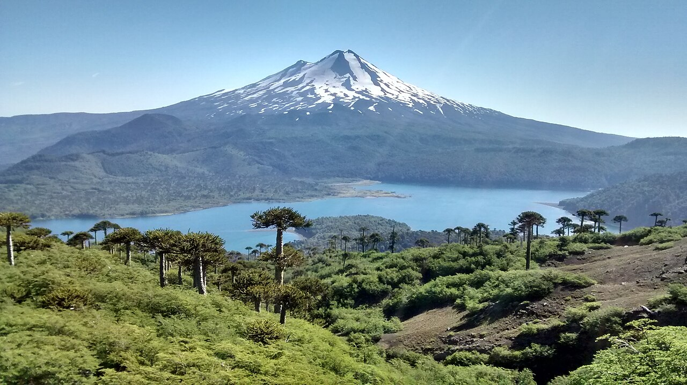

Mapa
Esta sección servirá para ubicar destinos y recorridos de La Araucanía.
El mapa estará disponible en una próxima etapa.

Esta sección servirá para ubicar destinos y recorridos de La Araucanía.
El mapa estará disponible en una próxima etapa.
